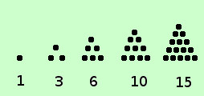
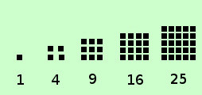

|
sono quei numeri che possiamo chiamare triangolari, quadratici,...nel piano; cubici nello spazio... eccetera  Definiamo triangolare un numero come un quelli che vedete a destra , cioe' tale che, considerato come insieme di unita', posso disporre tali unita' in modo che la figura sia corrispondente ad un triangolo equilatero se consideriamo tali numeri possiamo indicare la successione 1, 3, 6, 10, 15,... an-1+n, an+(n+1), ...... Cioe' ogni termine successivo si ottiene aggiungendo al termine precedente tante unita' quant'e'il posto del termine che cerco: ad esempio 1 e' il primo termine, per avere il secondo termine devo fare 1+2 3 e' il secondo termine, per avere il terzo termine devo fare 3+3 6 e' il terzo termine, per avere il quarto termine devo fare 6+4 10 e' il quarto termine, per avere il quinto termine devo fare 10+5 15 e' il quinto termine, per avere il sesto termine devo fare 15+6 ................... E' una successione a:N→N divergente  Similmente possiamo considerare i numeri "quadratici" Definiamo numero quadratico un numero come un quelli che vedete a destra , cioe' che considerato come insieme di unita' posso disporre tali unita' in modo che la figura sia corrispondente ad un quadrato se consideriamo tali numeri possiamo indicare la successione 1, 4, 9, 16, 25,... n2, (n+1)2 , ...... abbiamo gia' visto questa successione quando abbiamo considerato le potenze a base variabile Possiamo anche passare allo spazio e considerare la successione dei cubi dei numeri naturali, anche questa gia' considerata assieme alla precedente 1, 8, 27, 64, 125,... n3, (n+1)3 , ...... o per estensione le potenze quarte, quinte..... eccetera, ma di solito vengono considerate come semplici successioni di potenze senza dar loro particolare importanza |